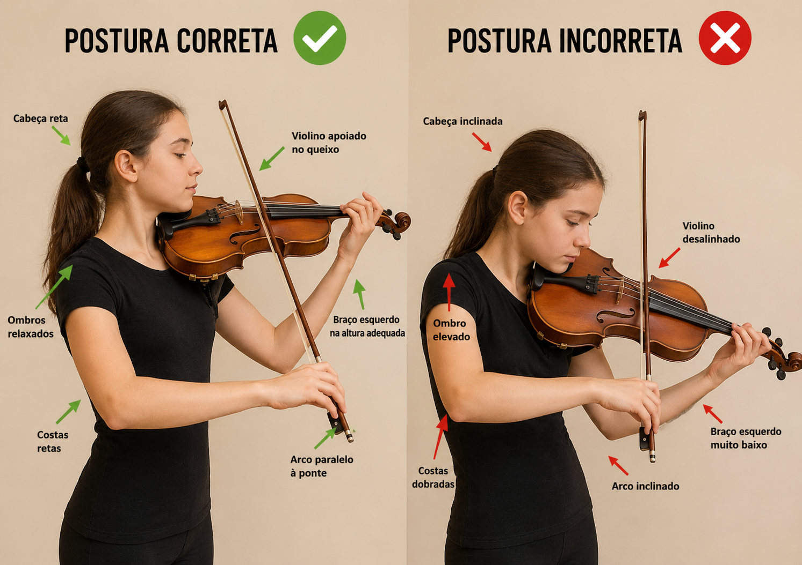
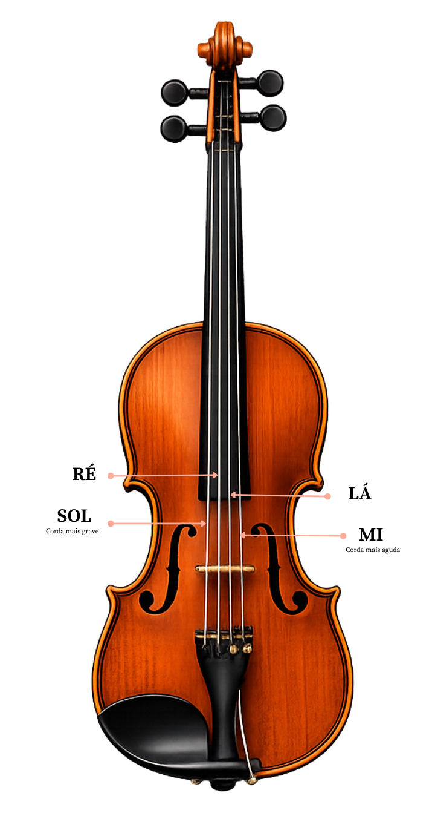
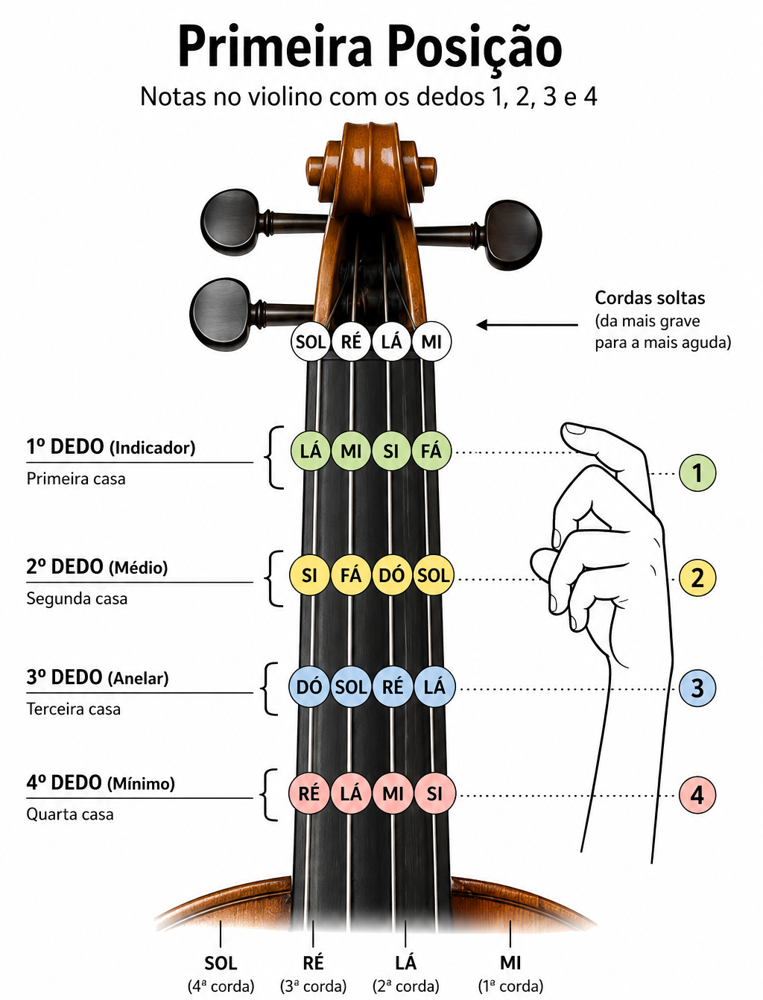
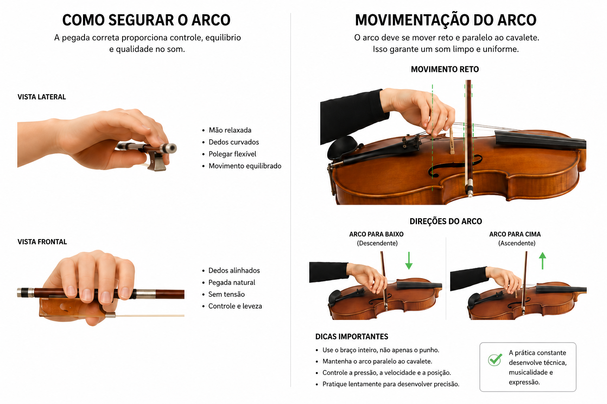

A prática musical no violino é essencial para o desenvolvimento técnico e artístico do músico. Através do estudo constante, o violinista aprimora a coordenação motora, a percepção sonora, a concentração e a expressão musical, desenvolvendo maior domínio sobre o instrumento.
A postura correta influencia diretamente a qualidade do som e o conforto durante a execução musical. O violinista deve manter o corpo relaxado, os ombros alinhados e o violino bem apoiado entre o ombro e o queixo. O controle do arco também é fundamental, pois sua movimentação define a intensidade, a suavidade e a precisão das notas produzidas.

O violino possui quatro cordas afinadas em intervalos de quinta. Da mais grave para a mais aguda, as cordas são:
Sol (G) | Ré (D) | Lá (A) | Mi (E)
Cada corda produz diferentes notas conforme a posição dos dedos no espelho do violino. O aprendizado começa geralmente pelas notas naturais e pelas cordas soltas.

A mão esquerda é responsável por pressionar as cordas para formar as notas musicais. Cada dedo ocupa uma posição específica no espelho do violino, alterando a altura do som produzido.
Os dedos devem permanecer curvados e relaxados, pressionando as cordas com leveza para evitar tensão e facilitar a movimentação.

O arco deve ser segurado com firmeza leve e natural. O polegar fica levemente curvado próximo ao talão do arco, enquanto os outros dedos ajudam no equilíbrio e no controle do movimento.
O movimento do arco deve ser reto e paralelo à ponte do violino. O braço direito controla a direção, velocidade e intensidade do som. Movimentos lentos produzem sons suaves e longos, enquanto movimentos rápidos criam maior intensidade e energia musical.
DICA: Pense que o seu braço é uma parede e o antebraço a porta, somente o antebraço deve se movimentar (movimentos de vai e vem)

1. Cordas Soltas: Treine movimentos retos do arco utilizando apenas as cordas soltas.
2. Troca de Cordas: Alterne lentamente entre as cordas Ré e Lá (desce o arco na Ré e sobe na Lá) mantendo o arco reto.
3. Ritmo: Toque todas as notas contando 4 tempos, depois 2 tempos, 1 tempo e meio tempo